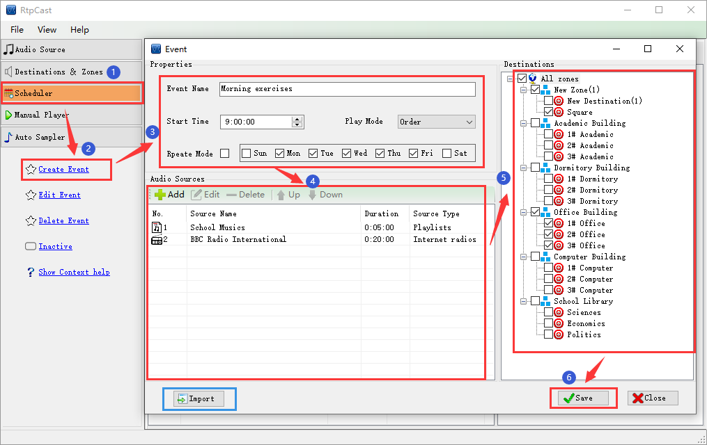

|  |
|
Introduction |
|
Events are tasks which are created to achieve specific playback functions. They are scheduled by the system. each event include scheduling cycle, start time, audio source, duration and destination. After saving the event, the system will sort the event list by start time of the event. |
|
Operation |
| (1) Click [Create Event] in the left navigation panel, You can enter the event name, start time, play mode (order or random) and scheduling cycle in the editing window of event. |
| (2) Edit(add, modify, and delete) audio sources. The audio source can only be selected from the "Audio Source" (except the hardware inputs), and its duration can be custom(duration = 0, it depends on the actual duration of the audio source; 0 < duration < actual duration, the set duration shall prevail; Otherwise, it is the actual playing time). Finally, click [OK] to confirm. |
| (3) Check the zone or destination in the "Destinations" panel on the right. |
| (4) Click [Save] to save the configuration parameters. |
| (5) [Import] function: "Import the existing event information (except the event name)", it can copy the event quickly. |